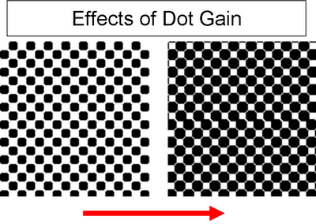
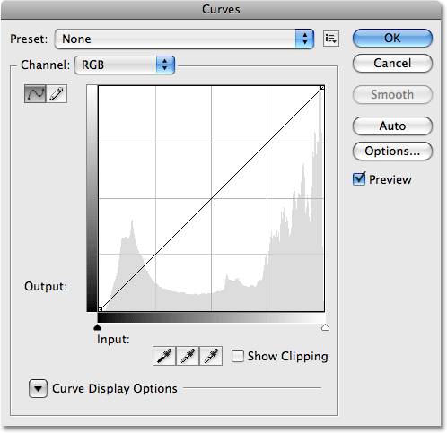

Keywords
Color Management
The controlled conversion between the color representations of various devices.
Preflight
Prepress
The term used in the printing and publishing industries for the processes and procedures that occur between the creation of a print layout and the final printing.
Troubleshooting (Correct Preflight Issues)
Image Correction (really a design issue)
Color Management (Accurate Colors)
Print Correction
Imposition
Classic Curve
Dot Gain
The effect of halftone dots growing in area between the original film and the printed sheet.
Image End Points
Halftone Placement
Identifies highlights, midtones, and shadows, levels are easy for simple controls.
Gray Balance
Identifying CMYK color builds in highlights, midtones, and shadows, curves are advanced and isolated controls.
Gang Run Printing
Multiple printing projects are placed on a common paper sheet in an effort to reduce printing costs and paper waste.
PhotoShop
Color Modes
A document can be converted to, displayed in, and edited in the following color modes: Bitmap, Grayscale, Duotone, Indexed Color, RGB Color, CMYK Color, Lab Color, or Multichannel.
Curves
Affects light's two primary influences, tones and contrast.
InDesign
Crop vs. Reframing
Crop: selecting a portion of the picture.
Reframing: scripting out selecting the portion of the picture.
Swapping Grayscale Image Color
Frame Color vs. Object Color
Frame Color: color surrounding the border of an image.
Object Color: color you make an object.

